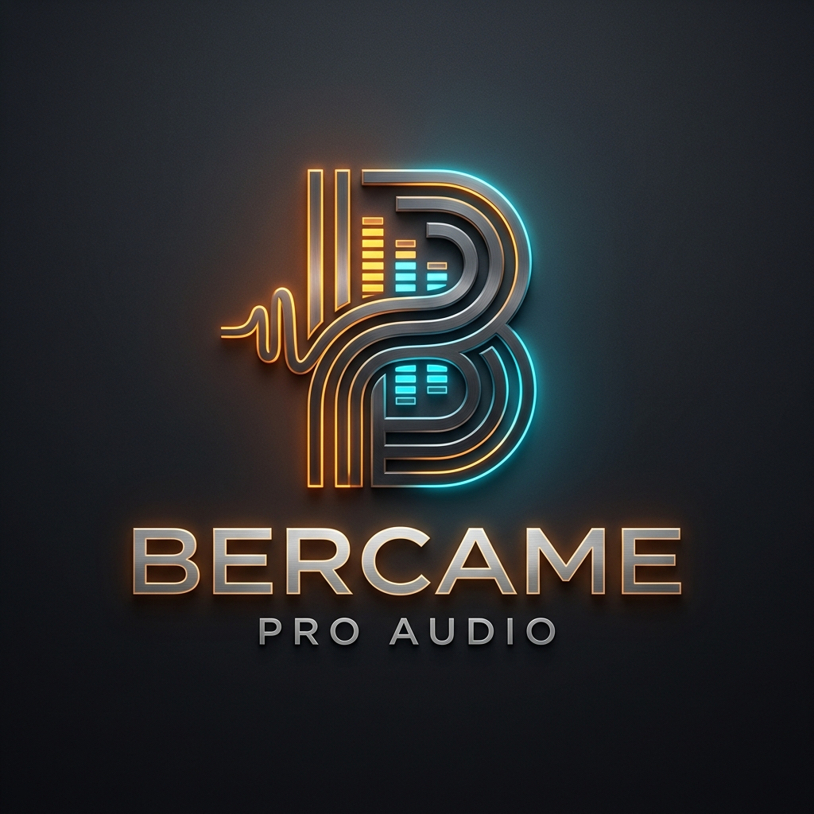

O Módulo de Saída de Áudio BERCAME é controlado através de uma interface web intuitiva e rápida, que pode ser acessada em computadores, notebooks, tablets e smartphones conectados à mesma rede local.
Conecte a fonte de alimentação do módulo e ligue o cabo de rede Ethernet. No computador conectado à rede, abra o terminal e inicie o servidor com o comando:
python server.pyAbra seu navegador de preferência (Chrome, Edge, Firefox ou Safari) e digite o endereço:
http://localhost:8080/preview.html
Conecte seu celular na mesma rede Wi-Fi do computador. O terminal exibirá o IP do seu servidor na rede (exemplo: http://192.168.31.236:8080/preview.html). Abra o navegador do celular e acesse esse endereço.
No canto superior direito da tela, você verá um indicador de status em tempo real:
Indica que o PC e o celular estão conectados ao mesmo tempo. Qualquer fader que você mexer no celular se moverá instantaneamente no computador e vice-versa.
Indica perda de conexão com o servidor. O sistema tentará se reconectar automaticamente a cada 2 segundos sem que você precise recarregar a página.
Na parte superior da tela em celulares e telas menores, há uma barra horizontal de botões: LR 1 2 ... 10. Dando um toque em qualquer número, a tela rola suavemente e centraliza o canal correspondente na visualização.
A tela principal apresenta 11 colunas de controle: a primeira coluna à esquerda é o Canal 0 (LR - Entrada Master) e as dez seguintes são as Saídas Independentes (Canais 1 a 10).
Controla o volume do canal em decibéis (dB):
Localizado no topo de cada faixa do canal:
Silencia a saída correspondente de forma instantânea:
Identificação rápida de cada via de áudio:
Ao lado de cada fader há uma coluna luminosa que indica a intensidade real do sinal de áudio que está saindo daquele canal:
| Cor do Medidor | Faixa de Sinal | Significado e Recomendação de Uso |
|---|---|---|
| 🟢 Faixa Verde | -50 dB até -10 dB | Nível Seguro: Sinal normal e dinâmico, totalmente livre de qualquer distorção. |
| 🟡 Faixa Amarela | -10 dB até 0 dB | Nível Ideal / Nominal: Ponto ideal de operação acústica, aproveitando o máximo de sinal sem ruído de fundo. |
| 🔴 Faixa Vermelha | Acima de 0 dB (+3dB a +6dB) | Atenção (Clipping): O sinal está próximo do limite. Se as luzes vermelhas ficarem acesas direto, reduza o fader ou o ganho para evitar distorção. |
Para abrir o equalizador de qualquer canal, basta clicar no mini-gráfico colorido localizado logo abaixo do nome do canal. Uma janela modal profissional será exibida.
Exibe a curva de equalização resultante em laranja sobre uma grade de 20 Hz a 20.000 Hz com escala de ganho de ±15 dB.
À direita do gráfico, você conta com um fader e knob de ganho dedicados para ajustar o volume sem precisar fechar o equalizador.
O primeiro controle à esquerda (com a identificação ciano HP) é o filtro passa-altas, projetado para cortar frequências sub-graves indesejadas:
HPF: Off na barra superior ou na caixinha do HPF para mudar para HPF: On.O equalizador possui 6 bandas totalmente flexíveis:
1000, Gain: 3.5, Q: 2.0) e digite diretamente pelo teclado.Para salas de evento, teatros, igrejas e alinhamento acústico fino, o sistema oferece um Equalizador Gráfico de 31 Bandas ISO (com espaçamento clássico de 1/3 de oitava), permitindo intervenções rápidas em qualquer ponto do espectro audível.
No cabeçalho do modal de equalização, clique no botão `Gráfico (31-B)`. O gráfico paramétrico dará lugar aos 31 faders verticais com a escala padrão internacional de engenharia sonora.
O centro exato (50%) é o 0.0 dB (linha verde de referência). Arrastando para cima você adiciona reforço (até +12 dB), e arrastando para baixo aplica corte (até -12 dB).
Uma barra vermelha em relevo desenha a intensidade do ganho ou corte a partir do centro, permitindo que você enxergue a forma da curva inteira instantaneamente.
| Região Espectral | Frequências Centrais dos Faders | Dicas Práticas de Ajuste |
|---|---|---|
| Subgraves | 20, 25, 31.5, 40, 50, 63 Hz | Peso e batida. Em salas pequenas, cortes aqui evitam estrondos e ressonâncias nas paredes. |
| Graves | 80, 100, 125, 160, 200, 250 Hz | Corpo de instrumentos e vozes. Cuidado com excessos em 160-250 Hz que deixam o som "embolado". |
| Médios-Graves | 315, 400, 500, 630, 800 Hz | Atenuar levemente entre 400 Hz e 630 Hz costuma "limpar" o som de caixas acústicas plásticas. |
| Médios | 1k, 1.25k, 1.6k, 2k, 2.5k Hz | Região principal da voz. Aumentar moderadamente em 2 kHz melhora a clareza de falas e palestras. |
| Médios-Altos | 3.15k, 4k, 5k, 6.3k, 8k Hz | Presença e ataque. É a região mais sensível à microfonia de microfones; faça cortes estreitos se apitar. |
| Agudos / Ar | 10k, 12.5k, 16k, 20k Hz | Sensação de espaço e definição de pratos de bateria. Pequenos reforços em 12.5k e 16k trazem ar e brilho. |
Para garantir que seu som tenha a máxima qualidade e fidelidade acústica, o mixer possui instrumentos de análise e teste integrados.
O RTA (as barras verdes animadas atrás da curva do equalizador) mostra graficamente a quantidade de energia sonora presente em cada frequência enquanto a música ou áudio está tocando:
O botão Ruído Rosa: On aciona um gerador de som acústico de referência diretamente no canal ativo:
Abra o equalizador do canal da caixa que deseja calibrar e clique em `Ruído Rosa: On`. Um som contínuo e equilibrado (como um chiado de cachoeira) começará a soar.
O ruído rosa possui energia igual em todas as oitavas. O RTA formará uma linha relativamente horizontal. Qualquer frequência que estiver muito alta ou muito baixa representa uma deformação da caixa ou da sala.
Abaixe as frequências que formarem "picos" indesejados até que o som fique natural e equilibrado. Ao terminar, clique em `Ruído Rosa: Off`.
Em vez de dar +10 dB de ganho em frequências deficientes (o que consome potência do amplificador e pode queimar drivers), tente primeiro atenuar (-3 dB a -6 dB) as frequências que estão em excesso.
Em caixas de voz e drivers de titânio, ligue o filtro HPF entre 80 Hz e 120 Hz. Isso protege as bobinas contra excursão mecânica de graves e deixa as vozes muito mais limpas.
Mantenha os knobs de ganho (Trim) próximos a 0.0 dB. Use os faders para dosar o equilíbrio sonoro entre as 10 saídas mantendo os medidores na faixa verde/amarela.
Não se preocupe em salvar arquivos manualmente. Qualquer alteração feita na mesa é salva na hora no sistema. Ao desligar e ligar novamente, a mesa volta exatamente como você deixou.